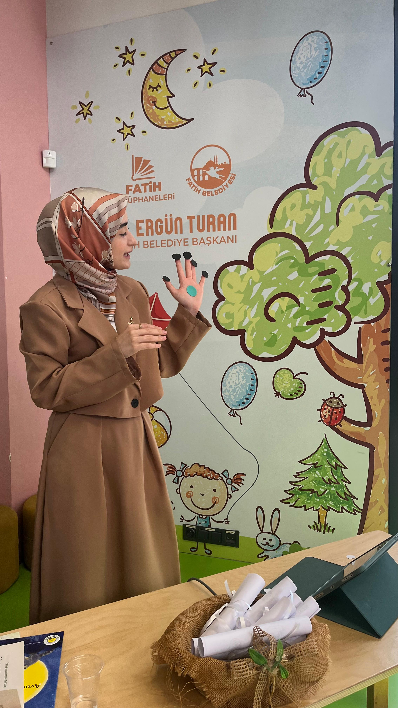

DENVER II
0-6 yaş çocukların kişisel-sosyal, ince motor, dil ve kaba motor gelişim alanlarını taramaya yardımcı olan gelişimsel değerlendirme aracıdır.

Üsküdar Üniversitesi Çocuk Gelişimi bölümünün ardından Karabük Üniversitesi'nde yüksek lisansımı tamamladım ve doktora çalışmalarıma devam ediyorum.
Akademik çalışmalarımda çocukların günlük yaşam rutinleri, ritüelleri, duygu regülasyonu ve ebeveynlik farkındalığı gibi konulara odaklanıyorum. Danışmanlık sürecinde bilimsel değerlendirme ile ailenin gerçek yaşam ritmini birlikte ele alıyorum.
Çocukların gelişimsel, bilişsel, dikkat ve öğrenme süreçlerini daha bütüncül değerlendirebilmek için bilimsel temelli test ve müdahale programlarından yararlanıyorum.
0-6 yaş çocukların kişisel-sosyal, ince motor, dil ve kaba motor gelişim alanlarını taramaya yardımcı olan gelişimsel değerlendirme aracıdır.
Çocuklarda dikkat, zamanlama, dürtüsellik ve hiperaktivite performansını görsel ve işitsel çeldiriciler eşliğinde değerlendirmeye yardımcı olan bilgisayar tabanlı bir testtir.
Çocukların ilkokula geçiş sürecindeki dikkat, dil, görsel algı, ince motor, sosyal-duygusal uyum ve temel akademik ön becerilerini değerlendirmeye yardımcı olan kapsamlı bir ölçme aracıdır.
Çocuğun gelişim alanlarını desteklemek için aileyle birlikte yapılandırılmış hedefler oluşturmaya yardımcı olan erken eğitim ve müdahale programıdır.
Okuma ve öğrenme süreçlerini desteklemek amacıyla dikkat, planlama ve bilgi işleme becerilerini geliştirmeye yönelik bilişsel müdahale programıdır.
Okul öncesi dönemde çocukların bilişsel gelişimini, kavram becerilerini ve okula hazırlık süreçlerini destekleyen yapılandırılmış bir programdır.
Aile içi iletişim, ebeveynlik tutumları, sınır koyma, rutin oluşturma ve ilişkisel süreçleri bütüncül biçimde ele alan danışmanlık hizmetidir.
Çalışma yaklaşımı
Çocuğun ve ailenin ihtiyacını yargısız ve bütüncül bir görüşme diliyle değerlendiririm.
Uzmanlık
Gelişimsel değerlendirme, erken müdahale, ebeveyn danışmanlığı ve aile danışmanlığı süreçlerini planlarım.
Uygulama
Görüşme çıktılarının aile yaşamına uygulanabilir, sade ve sürdürülebilir olmasına önem veririm.
İletişim
E-posta veya iletişim formu üzerinden ulaşabilirsiniz.